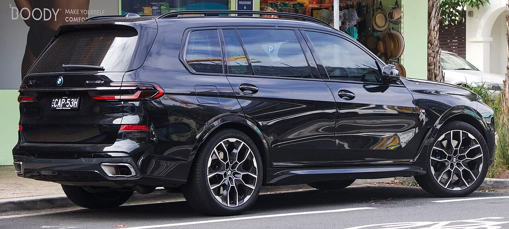

▲ BMW그룹은 프리미엄 브랜드 특유의 수익성을 앞세워왔지만, 2026년 상반기에는 중국발 충격으로 이 구조 자체가 흔들렸다 ⓒ Calreyn88, Wikimedia Commons (CC BY-SA 4.0)
BMW그룹이 2026년 상반기(1~6월) 실적을 발표했습니다. 매출은 622억 6,600만 유로로 전년 동기 대비 8.0% 감소했고, 세전이익(EBT)은 40억 4,500만 유로로 무려 29.4%나 줄었습니다. 세전이익률도 지난해 8.5%에서 6.5%로 주저앉았습니다. 전 세계 자동차 부문 인도량은 115만 6,727대로 전년 대비 4.2% 감소했는데, 그 내막을 들여다보면 유럽과 미국에서는 오히려 판매가 늘었다는 점이 눈에 띕니다. 문제는 단 하나, 중국이었습니다. 상반기 중국 시장 판매는 26만 1,773대로 전년 대비 20.4% 급감했고, 2분기만 놓고 보면 감소폭이 30.2%까지 확대됐습니다. 유럽·미국의 선전을 중국의 추락이 모두 집어삼킨 셈입니다.
1. 숫자로 보는 상반기 — 매출도, 이익도 뒷걸음질
BMW그룹은 승용 부문(BMW·MINI·롤스로이스)과 모터사이클, 금융서비스를 합산한 그룹 전체 실적에서 매출 622억 6,600만 유로를 기록했습니다. 이는 지난해 같은 기간보다 8.0% 줄어든 수치입니다. 더 뼈아픈 대목은 수익성입니다. 그룹 세전이익은 40억 4,500만 유로로 전년 대비 29.4% 급감했고, 자동차 부문만 따로 떼어 봐도 EBIT마진이 지난해 6.2%에서 3.6%로 거의 반토막이 났습니다. 2분기만 놓고 보면 자동차 부문 EBIT마진은 2.3%까지 낮아졌고, 그룹 세전이익도 2분기에만 16억 9,700만 유로로 전년 대비 35.1% 감소했습니다. 매출 감소폭(8.0%)보다 이익 감소폭(29.4%)이 훨씬 크다는 것은, 판매 대수가 줄어든 것 이상으로 비용 부담과 판매 단가·믹스 악화가 함께 겹쳤다는 의미로 해석됩니다.
| 항목 | 2026년 상반기 | 증감률 |
|---|---|---|
| 매출 | 622억 6,600만 유로 | -8.0% |
| 세전이익(EBT) | 40억 4,500만 유로 | -29.4% |
| 세전이익률 | 6.5% | -2.0%p |
| 자동차 부문 EBIT마진 | 3.6% | -2.6%p |
| 전 세계 인도량 | 115만 6,727대 | -4.2% |
| BEV(순수전기차) 인도량 | 20만 4,295대 | -7.4% |
전기차(BEV) 인도량이 7.4% 줄었다는 점도 눈여겨볼 대목입니다. BMW는 그동안 전동화를 성장 동력으로 앞세워왔지만, 상반기만 놓고 보면 전기차 판매마저 내연기관·하이브리드를 포함한 전체 판매 감소폭(4.2%)보다 더 크게 후퇴했습니다. 다만 BMW그룹은 유럽에서는 2분기 BEV 인도량이 전년 대비 3분의 1 이상 늘었다고 밝혀, 지역별 온도차가 크다는 점도 함께 확인됐습니다.
2. 세계 최대 단일 시장의 몰락 — 중국에서만 20.4% 급감

▲ 사진은 고성능 모델 M5. BMW의 프리미엄 세단 라인업은 그동안 중국에서 핵심 수익원이었지만, 최근에는 현지 브랜드와의 경쟁 심화로 입지가 흔들리고 있다 ⓒ 위키미디어 퍼블릭 도메인
BMW그룹 실적 부진의 진앙지는 명확히 중국입니다. 상반기 중국 판매는 26만 1,773대로 전년 대비 20.4% 급감했고, 2분기만 놓고 보면 감소폭이 30.2%까지 벌어졌습니다. BMW는 그동안 중국을 세계에서 가장 큰 단일 시장으로 운영해왔지만, 최근에는 중국 내 판매 비중이 25% 수준까지 떨어지며 유럽이 최대 시장 자리를 대신 차지했다는 분석까지 나오고 있습니다. 배경으로는 BYD를 비롯한 중국 현지 브랜드의 공세가 꼽힙니다. 가격 경쟁력과 소프트웨어·인포테인먼트 기술력을 앞세운 로컬 브랜드들이 프리미엄 세그먼트까지 잠식하면서, BMW 같은 전통 수입 브랜드의 입지가 계속 좁아지고 있다는 것입니다. 여기에 중국 합작법인 'BMW 브릴리언스 오토모티브' 관련 감가상각비 증가, 환율 변동, 원자재 가격 상승까지 겹치면서 수익성에 직접적인 타격을 줬습니다.
| 지역 | 증감률 | 비고 |
|---|---|---|
| 유럽 | +5.4% | 49만 6,651대 |
| 미국 | +3.9% | 20만 661대 |
| 중국 | -20.4% | 26만 1,773대(2분기 단독 -30.2%) |
BMW 관계자들은 중국 자동차 시장 자체의 둔화 속도가 2분기 들어 한층 빨라졌으며, 특히 내연기관·플러그인하이브리드 등 비순수전기 모델의 수요 위축이 두드러졌다고 설명하고 있습니다. 프리미엄 브랜드 최초로 대규모 중국 현지 생산 체제를 갖췄던 BMW 입장에서, 정작 그 중국 시장이 실적의 발목을 잡는 역설적인 상황이 벌어지고 있는 셈입니다.
3. 관세 부담에 8천 명 감원까지 — BMW의 '허리띠 졸라매기'

▲ BMW는 이번 구조조정에서 생산 라인이 아닌 연구개발·기획 등 독일 본사 사무직 위주로 약 8천 명을 감축하기로 했다 ⓒ LuvsMG481, Wikimedia Commons (CC BY-SA 4.0)
중국 부진만으로도 충분히 뼈아픈 상황에서, 미국의 관세 정책도 수익성에 추가 부담을 안겼습니다. BMW 측 설명에 따르면 관세는 자동차 부문 EBIT마진을 약 1.25%포인트 깎아내렸고, 여기에 BMW 브릴리언스 오토모티브 관련 감가상각 확대분(약 1.2%포인트)까지 더해지면서 수익성 악화를 가속했습니다. 여기에 중동 지역의 지정학적 리스크 확대까지 겹치며, BMW는 결국 2026년 전체 가이던스를 낮춰 잡을 수밖에 없었습니다. 자동차 부문 EBIT마진 목표를 기존 4~6%에서 1~3%로 하향 조정했고, 연간 인도량 전망도 '전년 수준 유지'에서 '소폭 감소'로 바꿔 잡았습니다.
BMW는 이 같은 위기에 대응해 대대적인 구조조정 카드도 꺼내들었습니다. 노사가 합의한 인력 재편 프로그램에 따라 2026년 10월부터 2027년 말까지 전 세계적으로 약 8천 명 규모의 인력을 희망퇴직 방식으로 줄이기로 했습니다. 눈에 띄는 점은 이번 감원이 생산 라인 근로자가 아니라 연구개발(R&D), 기획, 관리 등 본사 사무직 위주로 이뤄진다는 것입니다. 폭스바겐그룹이 앞서 최대 10만 명 규모의 감원 계획을 내놓은 데 이어 BMW까지 유사한 결정을 내리면서, 중국발 충격이 독일 완성차 업계 전반의 구조조정으로 번지는 모양새입니다. BMW는 이번 비용 절감 효과가 2026년 하반기에는 오히려 일회성 비용으로 반영돼 단기적으로는 실적에 부담을 줄 수 있다고도 밝혔습니다.
4. 반등 카드는 '노이에 클라세' — 5세대 X5·iX5로 하반기 승부

▲ BMW는 5세대 X5와 첫 순수전기 iX5를 앞세워 하반기 반등을 노리고 있다. 두 모델 모두 '뉴 클래스' 디자인·기술을 처음 대량 양산 차급에 적용한 사례다 ⓒ Autowizja(CC BY 4.0)
BMW가 실적 부진을 만회할 카드로 내세우는 것은 신차, 특히 '노이에 클라세(Neue Klasse)' 기반 모델들입니다. BMW는 2026년 6월 30일 5세대 X5와 이를 기반으로 한 첫 순수전기 모델 'iX5'를 나란히 공개했습니다. 새로운 디자인 언어와 파노라믹 비전 헤드업 디스플레이, 뉴 클래스 특유의 디지털 사용자 경험을 갖춘 신형 X5는 가솔린·디젤부터 플러그인하이브리드, 순수전기, 수소연료전지까지 한 차급에서 가장 다양한 파워트레인 조합을 제공하는 모델로 소개됐습니다. 양산은 2026년 8월부터 시작되며, 실제 고객 인도는 4분기 중 시작될 예정이어서 하반기 실적에 본격적으로 반영되는 것은 이르면 연말, 본격적인 효과는 2027년부터로 예상됩니다.
종합하면 BMW그룹의 2026년 상반기는 '유럽·미국에서 잘 팔았지만 중국에서 다 까먹은' 반기로 요약됩니다. 세계 최대 프리미엄 자동차 시장이던 중국이 더 이상 안전판이 아니라 리스크 요인으로 바뀌었다는 점, 그리고 이를 만회하기 위해 대규모 감원과 가이던스 하향까지 감수해야 했다는 점에서 BMW뿐 아니라 독일 프리미엄 브랜드 전반의 체질 전환이 얼마나 급박하게 진행되고 있는지를 보여주는 사례라 할 수 있습니다.